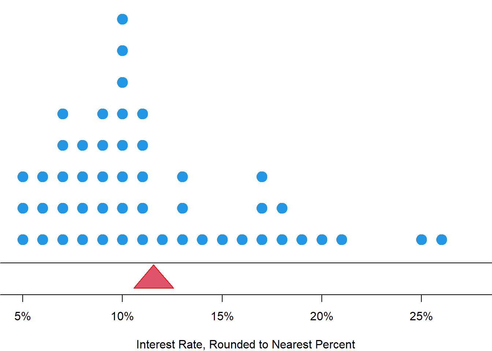
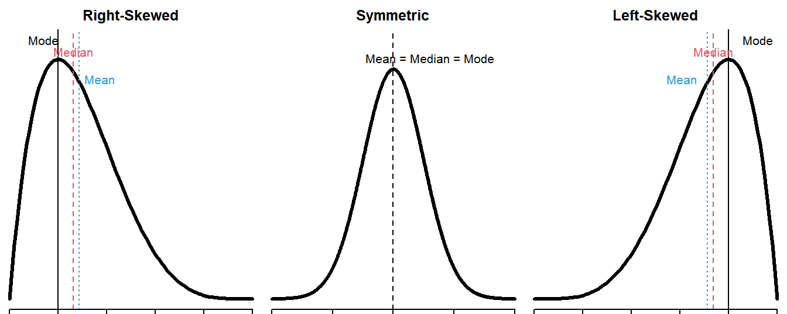
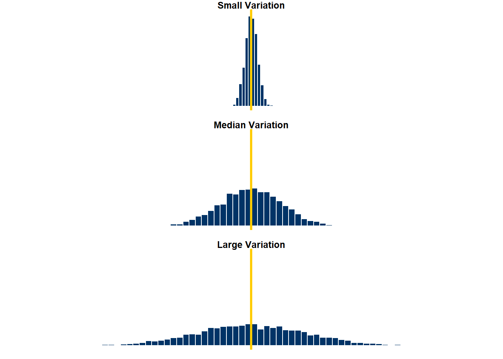
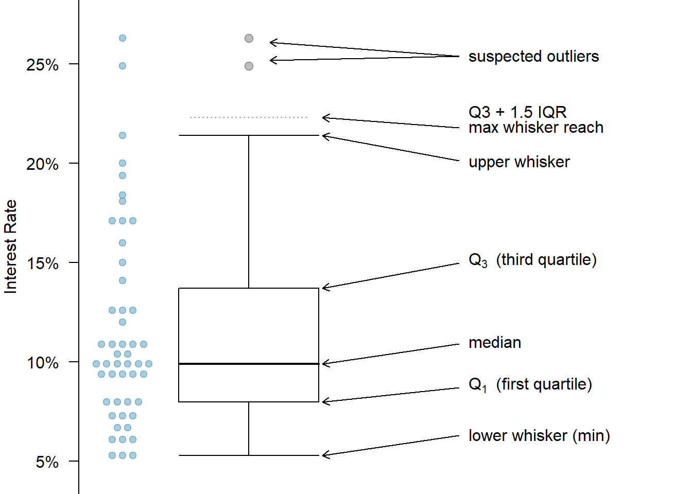

5 Data Sample Statistics
This book serves as a main reference book for my MATH 4720 Statistical Methods and MATH 4740 Biostatistical Methods at Marquette University. Some topics can also be discussed in an introductory data science course. You’ll learn basic probability and statistical concepts as well as data analysis techniques such as linear regression using R computing software.
5.1 Numerical Summaries of Data

- Measure of Center: We typically use the middle point. (What does “middle” mean?)
- Measure of Variation: What values tell us how much variation a variable has?
5.2 Measures of Center: Mean
- The (arithmetic) mean or average is adding up all of the values, then dividing by the total number of them.
- Let \(x_1, x_2, \dots, x_n\) denote the measurements observed in a sample of size \(n\). Then the sample mean is defined as \[\overline{x} = \frac{\sum_{i=1}^{n} x_i}{n} = \frac{x_1 + x_2 + \dots + x_n}{n}\]
- In the interest rate example, \[\overline{x} = \frac{10.9\% + 9.9\% + \cdots + 6.1\%}{50} = 11.56\%\]
mean(int_rate)[1] 11.5585.2.1 Balancing Point
- Think of the mean as the balancing point of the distribution.


5.3 Measures of Center: Median
- Median: the middle value when data values are sorted.
- Half of the values are less than or equal to the median, and the other half are greater than it.
- To find the median, we first sort the values.
- \(n\) is odd: the median is located in the exact middle of the ordered values.
- Data: (0, 2, 10, 14, 8)
- Sorted Data: (0, 2, 8, 10, 14)
- The median is \(8\)
- \(n\) is even: the median is the average of the two middle numbers.
- Data: (0, 2, 10, 14, 8, 12)
- Sorted Data: (0, 2, 8, 10, 12, 14)
- The median is \(\frac{8 + 10}{2} = 9\)
5.3.1 Calculate Median in R
median(int_rate) ## Compute the median using command median()[1] 9.9## Compute the median using definition
(sort_rate <- sort(int_rate)) ## sort data [1] 5.3 5.3 5.3 6.1 6.1 6.1 6.7 6.7 7.3 7.3 7.3 8.0 8.0 8.0 8.0
[16] 9.4 9.4 9.4 9.4 9.4 9.9 9.9 9.9 9.9 9.9 9.9 10.4 10.4 10.9 10.9
[31] 10.9 10.9 10.9 12.0 12.6 12.6 12.6 14.1 15.0 16.0 17.1 17.1 17.1 18.1 18.4
[46] 19.4 20.0 21.4 24.9 26.3length(int_rate) ## Check sample size is odd or even[1] 50(sort_rate[25] + sort_rate[26]) / 2 ## Verify the answer[1] 9.9(int_rate[25] + int_rate[26]) / 2 ## Using un-sorted data leads to a wrong answer!![1] 8.15.4 Measures of Center: Mode
- Mode: the value that occurs most frequently.
- For continuous numerical data, it is common to have no observations with the same value.
- Practical definition: A mode is represented by a prominent peak in the distribution.
## Create a frequency table
(table_data <- table(int_rate))int_rate
5.3 6.1 6.7 7.3 8 9.4 9.9 10.4 10.9 12 12.6 14.1 15 16 17.1 18.1
3 3 2 3 4 5 6 2 5 1 3 1 1 1 3 1
18.4 19.4 20 21.4 24.9 26.3
1 1 1 1 1 1 ## Sort the table to find the mode that occurs most frequently
## the number that happens most frequently will be the first one
sort(table_data, decreasing = TRUE)int_rate
9.9 9.4 10.9 8 5.3 6.1 7.3 12.6 17.1 6.7 10.4 12 14.1 15 16 18.1
6 5 5 4 3 3 3 3 3 2 2 1 1 1 1 1
18.4 19.4 20 21.4 24.9 26.3
1 1 1 1 1 1 5.5 Comparison of Mean, Median and Mode
- Mean is sensitive to extreme values (outliers).
- Median/mode is more robust than mean.
data_extreme [1] 90.0 9.9 26.3 9.9 9.4 9.9 17.1 6.1 8.0 12.6 17.1 5.3 7.3 5.3 8.0
[16] 24.9 18.1 10.4 8.0 19.4 14.1 20.0 9.4 9.9 10.9 5.3 6.7 15.0 12.0 12.6
[31] 10.9 9.4 9.9 7.3 18.4 17.1 8.0 6.1 6.7 7.3 12.6 16.0 10.9 9.9 9.4
[46] 10.4 21.4 10.9 9.4 6.1mean(data_extreme) ## Large mean! Original mean is 11.56[1] 13.14median(data_extreme) ## Median does not change![1] 9.9names(sort(table(data_extreme), decreasing = TRUE))[1] ## Mode does not change too![1] "9.9"- Mode is applicable for both categorical and numerical data, while median and mean work for numerical data only.
- There may be more than one mode, but there is only one median and one mean.

5.6 Measures of Variation

5.6.1 p-th percentile
- p-th percentile (quantile): a data value such that
- at most \(p\%\) of the values are below it
- at most \((1-p)\%\) of the values are above it

5.6.2 Interquartile Range (IQR)
- First Quartile (Q1): the 25-th percentile
- Second Quartile (Q2): the 50-th percentile (Median)
- Third Quartile (Q3): the 75-th percentile
- Interquartile Range (IQR): Q3 - Q1
## Use quantile() to find any percentile
## through specifying the probability
quantile(x = int_rate,
probs = c(0.25, 0.5, 0.75)) 25% 50% 75%
8.000 9.900 13.725 ## IQR by definition
quantile(x = int_rate, probs = 0.75) -
quantile(x = int_rate, probs = 0.25) 75%
5.725 ## IQR()
IQR(int_rate) [1] 5.725## summary() to get the numeric summary
summary(int_rate) Min. 1st Qu. Median Mean 3rd Qu. Max.
5.30 8.00 9.90 11.56 13.72 26.30 5.6.3 Variance and Standard Deviation
- The distance of an observation from its mean, \(x_i - \overline{x}\), its deviation.
- Sample Variance is defined as \[ s^2 = \frac{\sum_{i=1}^n(x_i - \overline{x})^2}{n-1} \]
- Sample Standard Deviation (SD) is defined as the square root of the variance \[ s = \sqrt{\frac{\sum_{i=1}^n(x_i - \overline{x})^2}{n-1}} \]
- Variance is the average of squared deviation from the sample mean \(\overline{x}\) or the mean squared deviation from the mean.
- SD is the root mean squared deviation from the mean. It measures, on average, how far the data spread out around the average.
5.6.4 Compute Variance and SD
var(int_rate)[1] 25.54942sqrt(var(int_rate))[1] 5.054644sd(int_rate)[1] 5.0546445.7 Visualizing Data Variation: Boxplot
When plotting the whiskers,
- minimum means the minimal value that is not an potential outlier.
- maximum means the maximal value that is not an potential outlier.

5.7.1 Interest Rate Boxplot

5.7.2 Boxplot in R
boxplot(int_rate,ylab ="Interest Rate (%)")sort(int_rate, decreasing = TRUE)[1:5][1] 26.3 24.9 21.4 20.0 19.4sort(int_rate)[1:5][1] 5.3 5.3 5.3 6.1 6.1Q3 <- quantile(int_rate, probs = 0.75,
names = FALSE)
Q1 <- quantile(int_rate, probs = 0.25,
names = FALSE)
IQR <- Q3 - Q1
Q1 - 1.5 * IQR[1] -0.5875Q3 + 1.5 * IQR[1] 22.3125